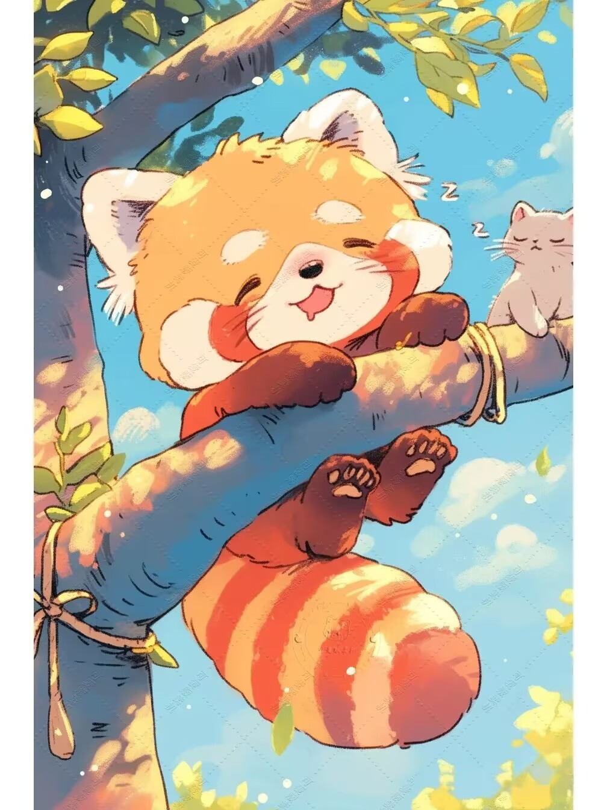
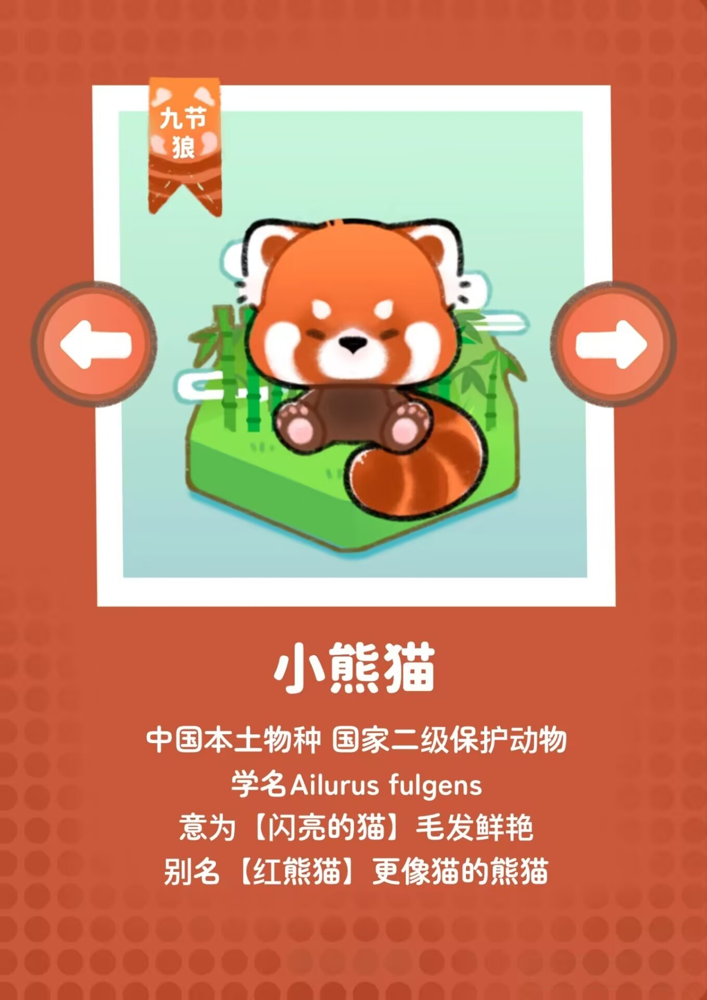
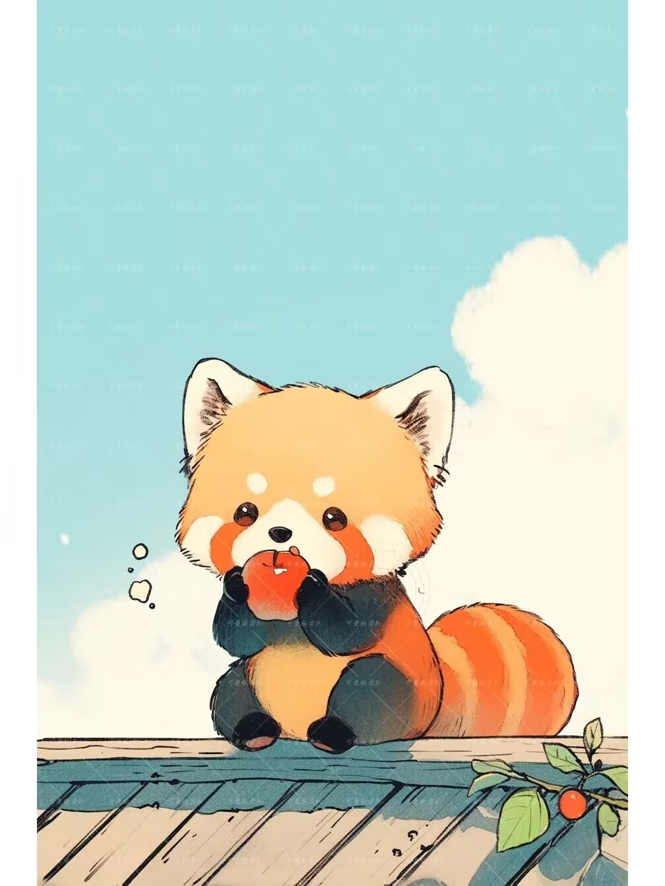

| 首页 | 全球动物保护日历 | 濒危动物图鉴 | 国际上采取措施 | 行动指南 | Every Live Is A Part Of The Planet We Called Earth. |
 小熊猫想对你说： “请偷猎者停止对我们的伤害，我们的美丽不应成为我们遭受痛苦和死亡的原因。我们的生命同样宝贵，不应该被当作商品交易。” |
 |  🔍形态特征： |
| 首页 | 全球动物保护日历 | 濒危动物图鉴 | 国际上采取措施 | 行动指南 | We All Live In The Same Earth , Breathe The Same Air. |